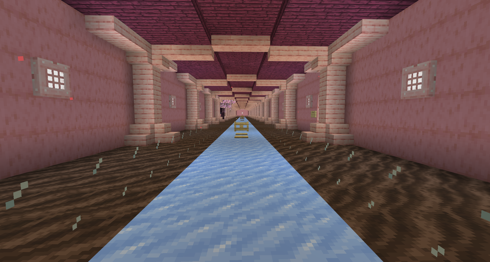

Lets face it, the nether is not that good right now. The highways kinda suck and it is not that easy to traverse without getting killed by piglins. Some of us do not need the extra chances to die (Joshua). We need to secure the nether from mobs, and make it as easy to trravel through as possible. There also needt to be clearer signs in the nether. There is nice signs on the "rich side" by Ethan and Ali, but those stop being helpful once you go any substancial distance. We should continue those signs and make it as easy to traverse the lands. There is an abundance of ice and that can be harvested for the nether and we can aquire iron for rails from selathiels iron farm.
